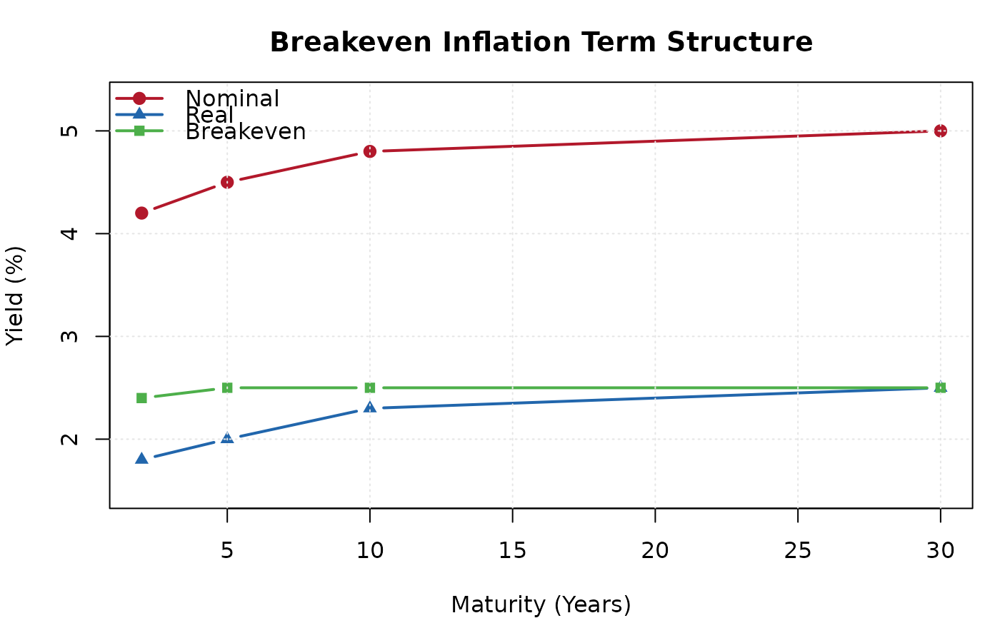

Calculates breakeven inflation as the spread between nominal and real (inflation-linked) bond yields. This provides a market-based measure of inflation expectations.
Value
An S3 object of class "ik_breakeven" with elements:
- breakeven
If
maturityis provided, a data.frame with columns: maturity, nominal, real, breakeven. Otherwise, a numeric vector of breakeven rates.- maturity
The maturity vector (or
NULL).
Details
Note: breakeven inflation is a simplified measure that does not account for inflation risk premium or liquidity premium. It should be interpreted as a rough proxy for inflation expectations, not a precise measure.
Examples
# Breakeven term structure
be <- ik_breakeven(
nominal_yield = c(4.2, 4.5, 4.8, 5.0),
real_yield = c(1.8, 2.0, 2.3, 2.5),
maturity = c(2, 5, 10, 30)
)
print(be)
#>
#> ── Breakeven Inflation Rates ───────────────────────────────────────────────────
#> • 2Y: 2.4% (nominal 4.2%, real 1.8%)
#> • 5Y: 2.5% (nominal 4.5%, real 2%)
#> • 10Y: 2.5% (nominal 4.8%, real 2.3%)
#> • 30Y: 2.5% (nominal 5%, real 2.5%)
plot(be)

# Simple breakeven (no maturity)
be2 <- ik_breakeven(nominal_yield = 4.5, real_yield = 2.0)
print(be2)
#>
#> ── Breakeven Inflation Rates ───────────────────────────────────────────────────
#> • Breakeven rates: 2.5%